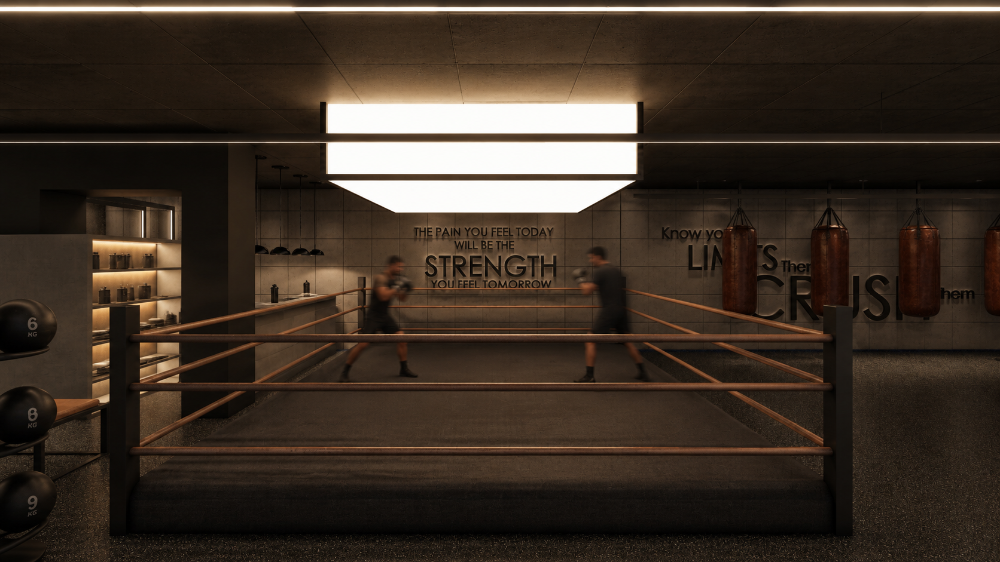
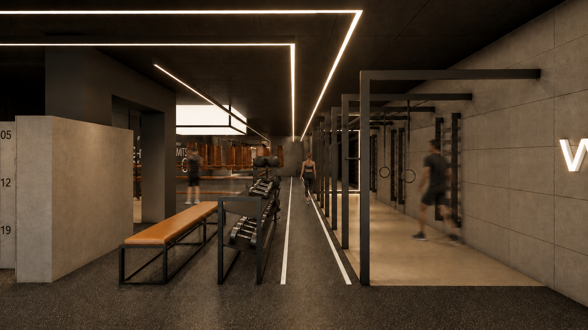
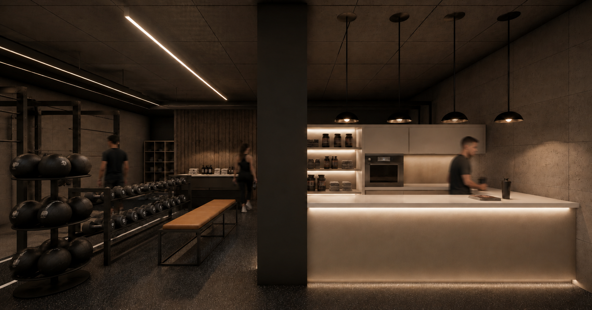
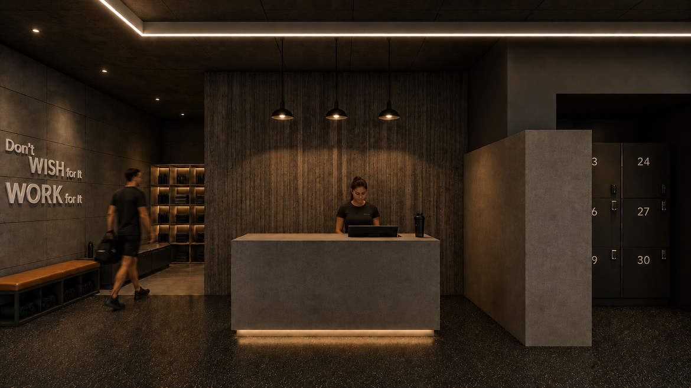
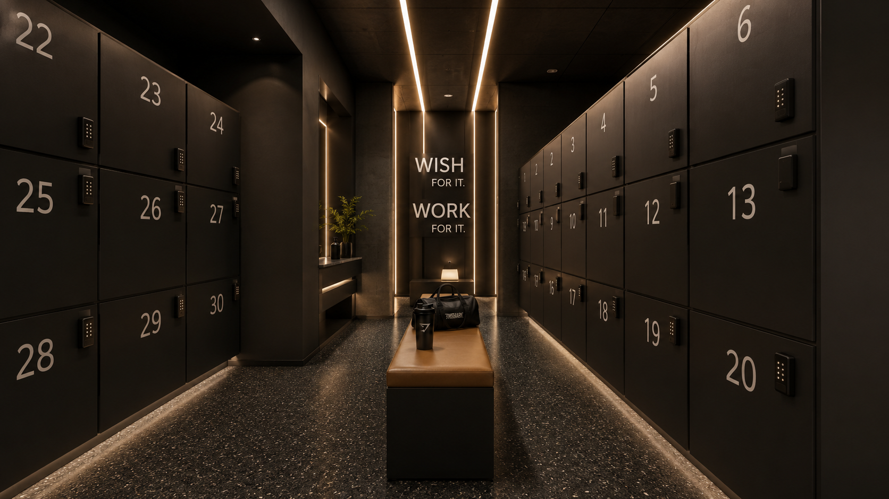

Sports Interior

Location
Year
Scope
Alpha Fight Club is a contemporary fitness facility designed to redefine the experience of training through architecture, atmosphere, and spatial organization. Rather than relying solely on functional requirements, the project seeks to create an environment that enhances focus, motivation, and performance while maintaining a refined architectural language. The interior is organized around a clear circulation strategy that separates training zones while preserving visual continuity throughout the space. Open sightlines between functional areas create a sense of connection and energy, allowing different activities to coexist without compromising comfort or efficiency. Large mirrored surfaces amplify spatial perception and reinforce the dynamic character of the gym while providing essential visual feedback during training. Material selection balances durability with warmth. Exposed concrete finishes, dark textured surfaces, natural wood, and carefully integrated lighting establish a strong visual identity while withstanding the intensive use expected in a professional sports environment. Soft indirect lighting is combined with focused illumination over key training areas to create contrast, enhance depth, and improve the overall user experience. The project accommodates a variety of training activities, including strength training, functional workouts, cardio, and martial arts, each carefully positioned to optimize movement and accessibility. Supporting spaces such as the reception, lounge, and changing facilities are seamlessly integrated into the overall layout, ensuring a coherent journey from arrival to training. Alpha Fight Club demonstrates how thoughtful spatial planning, carefully selected materials, and controlled lighting can transform a conventional gym into an immersive architectural environment that promotes both physical performance and a strong sense of identity.




